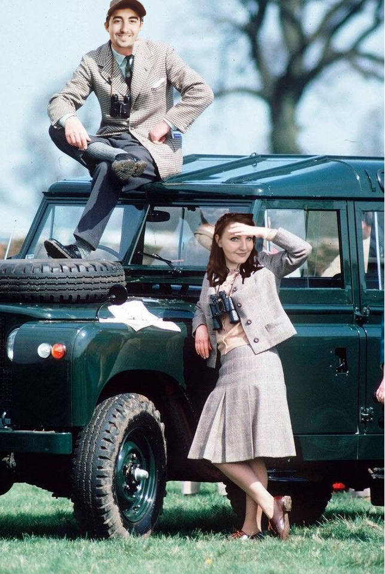
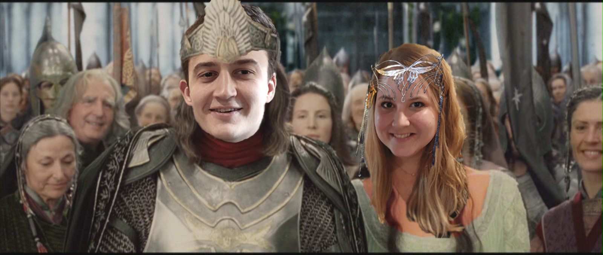
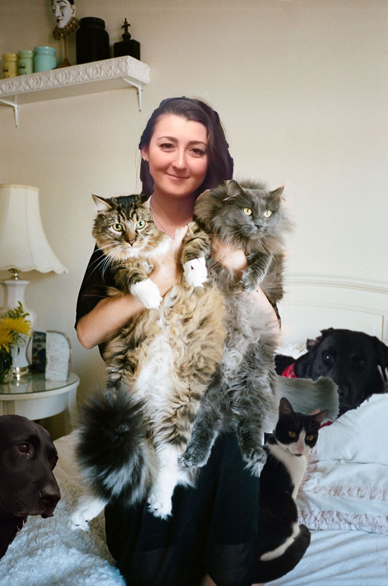

Martin Pitcairn's first born child, Michael, with his love, Jemima Hopkins.

Martin Pitcairn's second born child, Matthew, with his bride, Kristen Hopf.

Martin Pitcairns's third and final child, Sarah-Jane, presenting Martin with two more pets, alongside his pets Oscar, Theo and Kiki.